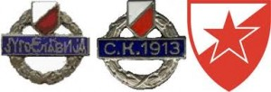
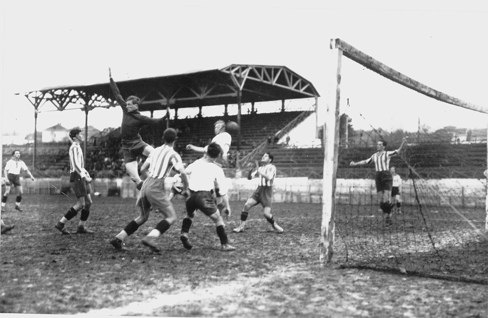

Fudbalski klub Crvena zvezda osnovan je 4. marta 1945. godine, na inicijativu članova Ujedinjenog saveza antifašističke omladine Srbije. Prvobitno, mesec dana ranije - u februaru iste godine, osnovano je novo omladinsko fiskulturno društvo koje je brzo preraslo u sportski kolektiv i dobilo ime „Crvena zvezda“.
Prva utakmica odigrana je na sam dan osnivanja, a rival je bio Prvi bataljon Druge brigade KNOJ-a. Naš tim je slavio rezultatom 3:0 na igralištu „Studenta“. Crvena zvezda je tada nastupala u sledećem sastavu: Golubičić (Popadić), Stanković, Filipović, Pečenčić, Ćirić, Jovanović, Veličković, Tomašević, Šapinac (Stokić), Spasojević i Horvatović. Strelac prvog, istorijskog gola za Crvenu zvezdu, bio je Kosta Tomašević. Tokom prve godine postojanja, Crvena zvezda je odigrala ukupno 36 mečeva. Zabeležila je 30 pobeda, nerešeno je bilo pet puta, a jedini poraz doživljen je u Temišvaru protiv Rumunije.
Za prvog predsednika kluba izabran je Đorđe Paljić, za potpredsednike Slobodan Ćosić i Zoran Žujović, za sekretara Ljubiša Sekulić, za blagajnika Dušan Bogdanović, a ekonom je bio Predrag Đajić.
Prvi trofej - trofej Prvenstva Srbije, osvojen je 1946. godine. U završnom takmičenju u maju i junu 1946. godine, učestvovalo je šest timova. Crvena zvezda je osvojila prvo mesto pobedivši Železničar u Nišu, Metalac u Beogradu, Jedinstvo u Smederevu i Radnički u Kragujevcu. Jedini meč koji je naš tim izgubio bio je protiv Borca iz Čačka.
Godine 1948. osvojen je prvi Kup, a u finalu sa ubedljivih 3:0 pobeđen je Partizan. Sledi period konstantnog osvajanja odličja i posle tri pehara u najmasovnijem takmičenju, 1951. godine u nezabeleženoj triler završnici prvenstva najtrofejniji srpski klub stiže i do naslova najboljeg u Državnom prvenstvu. Sustigli smo prednost zagrebačkog Dinama od pet bodova (tada se pobeda bodovala sa dva boda) u poslednja tri kola, a oduševljeni navijači zapalili su novine na stadionu i na ramenima nosili svoje junake kroz Beograd. U narednim decenijama Crvena zvezda izrasta u giganta svetskog formata, sa prepoznatljivom brzom i efikasnom igrom.
Sledi 1957. godina koja je Crvenoj zvezdi donela petu titulu prvaka, kao i prvi veliki evropski uspeh. Crveno-beli su zaigrali na međunarodnoj evropskoj sceni, i odigrali su polufinale u Kupu evropskih Šampiona. Italijanska Fiorentina je slavila sa 1:0 u Beogradu, dok je meč u Italiji završen nerešenim rezultatom. Godinu dana kasnije u vitrine našeg kluba stigao je i prvi evropski trofej - Dunavski Kup. Do narednog evropskog trofeja čekalo se punih 10 godina, a potom je 1968. godine ponovo osvojen, kako se tada zvao, Srednjoevropski Kup.
Crvena zvezda je dominirala u nacionalnim takmičenjima, i vreme je došlo da se ode stepenik više. Prva velika prilika propuštena je 1971. godine, kada je po drugi put u svojoj istoriji, Crvena zvezda igrala polufinale Kupa evropskih šampiona. Na Marakani je ubedljivo savladan Panatanaikos rezultatom 4:1, dok je još uvek neobjašnjiv poraz u revanšu od 3:0. Potom je 1975. godine Crvena zvezda odigrala polufinale Kupa pobednika Kupova. Rival iz Mađarske, Ferencvaroš, bio je uspešniji. Prvi meč je završen rezultatom 2:1 u korist Ferencvaroša, dok je revanš u Beogradu završen nerešenim rezultatom.
Treća velika prilika propuštena je u finalu Kupa Uefa 1979. godine, kada je Crvena zvezda, nakon sudijske nepravde, poražena od Borusije iz Mehengladbaha. U Kupu UEFA prvo je savladan Dinamo iz Berlina, zatim je pobeđen Sporting iz Hihona, Arsenal, Vest Bromvič Albion, Herta. U finalu smo se susreli sa Borusijom. Prvi meč u Beogradu je završen nerešenim rezultatom (1:1). U revanšu, sudija iz Italije Paolo Mikeloti je dosudio nepostojeći penal koji je doneo pobedu Borusiji.
Narednih skoro deceniju i po crveno-beli su bili redovan učesnik evro-kupova, pobeđeni su mnogi fudbalski džinovi, a Crvena zvezda je zahvaljujući sjajnim igrama i vrhunskim velemajstorima u svojim redovima, postala simbol istočno-evropskog fudbala. Tri puta je, nakon finala Kupa UEFA, Crvena zvezda igrača četvrtfinale Kupa evropskih Šampiona. Prvi put 1981. godine, kada je protivnik bio Inter. Prvi meč je odigran u Milanu, rezultat je bio nerešen, 1:1. U revanš meču slavio je Inter. Naredne godine, u dvomeču protiv Anderlehta, Crvena zvezda je poražena (u oba meča) rezultatom 2:1. Pet godina kasnije, 1987. godine, u četvrtfinalu je rival bio slavni Real iz Madrida kojeg je naš tim savladao pred punim stadionom u Beogradu rezultatom 4:2. U revanš meču koji je usledio, naš tim je bio poražen 2:0 u Madridu, i zbog golova postignutih u gostima dalje se plasirao španski prvak.
Nagrada za godine uspešnog rada na Marakanu je konačno stigla 1991. godine kada Zlatna generacija srpskog kluba osvaja Evropu i svet. U finalu Kupa evropskih šampiona pobeđen je Olimpik iz Marseja, nakon izvođenja jedanaesteraca. Samo nekoliko meseci kasnije, u Tokiju, pehar namenjen svetskom klupskom prvaku takođe je zablistao u trofejnoj sali stadiona „Rajko Mitić“. I naredne godine, Crvena zvezda je nastupala u Kupu evropskih šampiona, ali zbog uvođenja sankcija nije odigrala nijednu utakmicu pred svojim vernim navijačima. Sampdorija je bila zadnja prepreka koju je naš tim trebalo da savlada kako bi ponovo igrao finale ovog takmičenja. Utakmica koja se igrala u Sofiji završena je rezultatom 3:1 u korist tima iz Italije.
Nažalost, jedna generacija mladih i superkvalitetnih igrača usled građanskog rata na prostoru bivše Jugoslavije nije uspela da se zadrži na okupu. Usledile su sportske sankcije prema našoj zemlji i zabrana učešća u međunarodnim nadmetanjima. Stanje u klubu se s punim pravom često poistovećuje sa stanjem u državi, jer još od osnivanja sudbinu srpskog naroda delio je i naš klub. Crvena zvezda se našla u teškom periodu tokom kojeg rukovodstvo i igrači često menjani, kvalitet fudbala je opao, ali i u takvoj situaciji klub je uspeo da osvoji zavidan broj trofeja u domaćim okvirima.
Na leto 2014. godine, Crvena zvezda je osvojila 27. titulu prvaka države, i to nakon višegodišnjeg „posta“. Dve godine kasnije, 28. titula prvaka osvojena je na veoma dominantan i ubedljiv način, i upravo je ovaj trofej pokazatelj da se Crvena zvezda oporavlja, i da se sa mnogo više optimizma može gledati ka budućnosti najtrofejnijeg kluba u Srbiji.